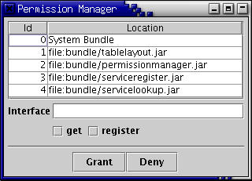
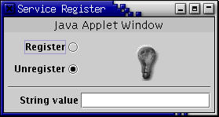
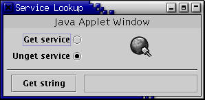

To enable security, use some form of the following command:
java -Djava.security.manager
-Djava.security.policy=<policy-file>
-jar lib/oscar.jar
The -Djava.security.manager parameter installs the default Java security manager and the -Djava.security.policy=<policy-file> parameter specifies the policy file to use; a real file name should be substituted for <policy-file>. Please note that this command should be typed all on a single line; it is on two lines here for presentation purposes. Also, if this command is performed on a Windows machine, then substitute \ for / where appropriate.
OSGi specifies three different security permissions, namely AdminPermission, PackagePermission, and ServicePermission. The purpose of each of these permissions is as follows (for more detailed descriptions refer to the OSGi specification):
Adding security to Oscar has impacted it from a performance perspective and from an implementaiton perspective. There should be little if any performance impact when a security manager is not active because Oscar brackets permission checking with an if-statement such as:
if (System.getSecurityManager() != null)
{
// ...do permission check here...
}
Additionally, when there is no security manager installed, Oscar does not perform doPrivileged() blocks and instead calls "unchecked" methods directly to bypass the creation of PrivilegedAction instances. With a security manager installed, however, the biggest performance impact is likely to be the creation of PrivilegeAction instances.
Regarding the implementation impact of adding security to Oscar, the three different OSGi security permissions impacted Oscar in the following areas (the following text is slightly out of date):
Further security-related implementation impacts in Oscar were in these areas:
The Oscar release package includes a simple, example policy file; this policy file works in conjunction with three new example bundles (Permission Manager, Service Register, and Service Lookup). To start Oscar with using the example policy, from the Oscar install directory type the following command:
java -Djava.security.manager
-Djava.security.policy=example.policy
-Dlib.dir=lib
-jar lib/oscar.jar
This command starts Oscar with security enabled and using the example policy for granting permissions to loaded bundles. The additional -Dlib.dir=lib parameter allows the location of oscar.jar and osgi.jar to vary, but in this case they are in the default location. For further understanding, the example policy is reproduced here:
grant codeBase "file:bundle/shellgui.jar" {
permission org.osgi.framework.ServicePermission "org.ungoverned.osgi.bundle.shellgui.Plugin", "get";
};
grant codeBase "file:bundle/shelltui.jar" {
permission org.osgi.framework.ServicePermission "org.ungoverned.osgi.service.shell.ShellService", "get";
};
grant codeBase "file:bundle/shellplugin.jar" {
permission java.security.AllPermission;
};
grant codeBase "file:bundle/bundlerepository.jar" {
permission java.security.AllPermission;
};
grant codeBase "file:bundle/permissionmanager.jar" {
permission java.security.AllPermission;
};
grant codeBase "file:bundle/shell.jar" {
permission java.security.AllPermission;
};
grant codeBase "file:${lib.dir}/oscar.jar" {
permission java.security.AllPermission;
};
grant codeBase "file:${lib.dir}/osgi.jar" {
permission java.security.AllPermission;
};
grant codeBase "file:${lib.dir}/moduleloader.jar" {
permission java.security.AllPermission;
};
grant {
permission java.io.FilePermission "${user.home}${file.separator}.oscar${file.separator}-", "read, write, delete";
permission org.osgi.framework.PackagePermission "*", "EXPORT";
};
By examing each grant section of the example policy, it is possible
to understand what the policy actually enforces. The first section grants
the permissionmanager.jar bundle AllPermission, which
means that it has permission to do everything. Likewise, in the second
and third sections the Oscar and OSGi classes are also granted AllPermission,
respectively, which allows them to do everything as well. The last section
does not specify a code base, therefore it applies to all code, including
all bundles; it grants all code permission to read, write, and delete
from the Oscar configuration directory in the user's home directory and,
specifically for bundles, the permission to export any package.
Important: the FilePermission is actually too permissive in the example policy, since it lets any bundle access files anywhere in the Oscar configuration directory. To limit this, you could specify the actual profile name after the .oscar directory; to limit it even further you could specify a specific bundle code base and then specify the profile name and the actual bundle data directory; future versions of Oscar will handle file permissions in a more elegant and dynamic way. In the meantime, if specific permissions are required, then an example grant section for a bundle with ID 3 under profile "security" would look like this:
grant codeBase "file:${user.home}/.oscar/security/bundle3/data/- " {
permission java.io.FilePermission "${user.home}/.oscar/-", "read, write, delete";
};
Important: the OSGi specification says that "export" PackagePermission implies "import" PackagePermission, so if a bundle has export permission it automatically has import permission, but the converse is not true.
Note 1: The following demonstration requires JDK 1.4 for dynamic security changes; when using a JDK version that is less than 1.4 the security changes are not dynamic and require that Oscar is restarted for the security changes to take affect.
Note 2: The following example assumes that you are running Oscar from the installation directory. The permissionmanager.jar bundle actually modifies the example.policy when granting and denying permissions; it also saves its state in to its bundle cache data directory reflecting what it believes the current set of granted permissions are in the example.policy file.
Three bundles are used to demonstrate some of the security features, they are Permission Manager, Service Register, and Service Lookup; these bundles are intended for education purposes only. Start Oscar using the command from the previous section and create a new profile, perhaps called security. Once Oscar is started, load the following four bundles from obr (this demonstration assumes that you have started Oscar from the Oscar install directory):
obr deploy "table layout"
obr deploy "permission manager"
obr deploy "service register"
obr deploy "service lookup"
The first bundle, Table Layout, is simply a library that is needed by the other bundles to create their user interfaces. The Permission Manager bundle is a simple tool for dynamically administering ServicePermissions and it presents and user interface like this:

The Permission Manager bundle displays a list of all installed bundles. By selecting a bundle from the list and typing in an interface name (or wildcard) and selecting a service action, it is possible to grant or deny ServicePermissions to the selected bundle. The Service Register bundle registers a simple service under the interface org.ungoverned.osgi.bundle.serviceregister.SimpleService and it presents a user interface like this:

The Service Register bundle displays buttons to register or unregister its service; it service is an interface that returns a string value. To set the string value returned by the service, use the text field provided in the user interface -- after entering a string you must press the <ENTER> key to set the value. The Service Lookup bundle tries to use the service provided by the Service Register bundle and it presents a user interface like this:

The Service Lookup bundle displays buttons to get and unget the service offered by Service Register; a button is also exists for retrieving the string value of the service and a text field is used to display the retrieved string value. Notice that the windows for Service Register and Service Lookup have a banner that reads "Java Applet Window", but the Permission Manager window does not. This is because the example policy file does not permit arbitrary code to display top-level windows without banners, but Permission Manager was granted AllPermission, so it does have permission to display top-level windows without banners. To display top-level windows without the warning banner, the policy file must grant the code source java.awt.AWTPermission with the target property name showWindowWithoutWarningBanner. Now that all of the bundles are started, the following steps walk through the remainder of the security demonstration.
Initially, Service Register and Service Lookup do not have permission to register or get any services. An attempt to register the service in the Service Register user interface results in a security exception. On the otherhand, an attempt to get the service in the Service Lookup user interface does not result in an exception in the application code; this is important because the specification stipulates that bundles without permission should not be able to determine whether the service exists at all.
First, grant Service Register permission to register its service by selecting it in the list of bundles in the Permission Manager user interface. To actually grant the permission to register its service type "org.ungoverned.*" into the interface text field, select the register checkbox, and click on the grant button; this allows the bundle to register any service that begins with the package name " org.ungoverned". Upon successful completion of this step, an attempt to register the service in the Service Register user interface should succeed and the lightbulb icon should turn on.
At this point, it is possible for Service Register to register and unregister its service, but it is still not possible for Service Lookup to get the service. To grant permission to this bundle to get the service, select the Service Lookup bundle in the Permission Manager bundle's user interface. Type "org.ungoverned.*" into the interface text field, select the get checkbox, and click on the grant button; this allows the bundle to get any service that begins with the package name "org.ungoverned". Upon successful completion of this step, an attempt to get the service in the Service Lookup user interface should succeed and its globe icon should become enabled.
To conclude the demonstration, enter a string into the string value text field of the Service Register user interface; make sure to press the <ENTER> key. Retrieve the entered string by clicking on the get string button in the Service Lookup user interface.
Bundles that load native libraries must have an additional runtime permission; the actual permission grant in the policy file should be in the form of:
grant codeBase "file:bundle/simple.jar" {
permission java.lang.RuntimePermission "loadLibrary.*";
};
The above grant section permits the simple.jar code base to load any library; this could be further restricted by specify the name of the library, such as "loadLibrary.foo". The simple.jar bundle included with the Oscar example bundles uses a native library under Linux, so it can be used to experiment with native library permissions.
Certain areas of OSGi specification were either unclear or open to interpretation, so the resulting security behavior of Oscar may vary according to someone else's interpretation of the OSGi specification. Also, some difficulties pertaining to the JDK implementation were uncovered and work-arounds were needed to attain desired behavior. In particular, the following issues are important:
Security functionality is has not been fully stressed tested, so there might some specification compliance issues worked out. If you have comments or suggestions, feel free to contact me at heavy@ungoverned.org.
Richard S. Hall